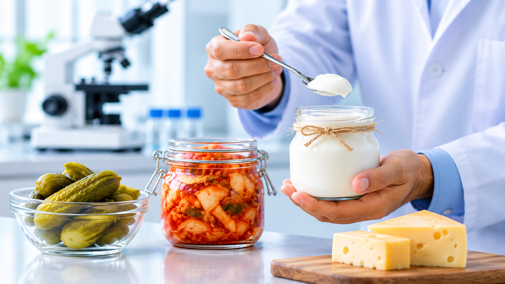

One Health
Explore beneficial and harmful microbes, microbiomes, host responses, and health across humans, animals, plants, and environments.
RESEARCH AT HOPE LAB

MICROBIAL BIOCHEMISTRY • MOLECULAR FUNCTION • ONE HEALTH
We believe life is a network of interconnected pathways. We are driven to understand how microbial metabolic pathways, molecular functions, and biological interactions connect living organisms with health, food systems, and the environment and how this knowledge can be translated into meaningful, sustainable benefits.
OUR RESEARCH FRAMEWORK
Our research moves through four connected stages: understanding health across living systems, examining organisms and their molecular profiles, investigating the pathways and products that shape biological activity, and placing these findings in their ecological and environmental context. Together, the 1H → 2O → 3P → 4E framework gives our projects a shared direction while allowing each research question to be explored through appropriate biochemical, microbiological, molecular, and omics approaches.
See the framework overviewExplore beneficial and harmful microbes, microbiomes, host responses, and health across humans, animals, plants, and environments.
Study probiotic, plant-associated, marine, and stress-adapted organisms through genomics, glycomics, metabolomics, and microbiome analysis.
Investigate exopolysaccharides, pigments, biosurfactants, enzymes, and antimicrobial compounds and their biological functions.
Understand microbial adaptation and interactions in fermented foods, host and plant niches, extreme habitats, and polluted environments.
OUR AREAS OF INQUIRY
Biological systems produce a diverse range of molecules with important biochemical properties and functions. We investigate microbial exopolysaccharides, pigments, biosurfactants, enzymes, antimicrobial compounds, and other functional metabolites, examining their characteristics, biological activities, and underlying functions. Through biochemical and microbiological approaches, we explore their potential relevance to food preservation, biotechnology, agriculture, and environmental management, while identifying opportunities for further investigation and application.
Health, food systems, and the environment are interconnected through complex biological interactions in which microorganisms play important roles. We investigate beneficial microorganisms, particularly lactic acid bacteria associated with fermented foods, alongside microbial characteristics relevant to host interactions, food safety, and antimicrobial resistance. Our research examines probiotic properties, antimicrobial activities, functional metabolites, and other biological traits to better understand microbial contributions to health and explore their potential applications across interconnected biological systems.
We explore the development of foods with enhanced nutritional quality and useful functional properties through the combination of probiotic microorganisms and other natural sources. This work considers how beneficial microbes and naturally occurring ingredients may contribute to food quality, safety, nutritional value, and health-supporting characteristics. We are interested in approaches that also help address food spoilage and microbial risks, supporting the development of safer and more resilient food systems.
Understanding biological function often requires examining multiple levels of molecular organisation. We use genomics, glycomics, and metabolomics, supported by bioinformatics, to investigate functional potential, metabolic characteristics, and biochemical processes in microorganisms and other biological systems. These complementary approaches help reveal molecular features associated with adaptation, capabilities, and biological activity, providing insights that can guide further experimental research and the investigation of potential biotechnological applications.
Biological functions are shaped by the environments in which organisms live and by their interactions with other organisms. We investigate microbial communities and adaptation across fermented foods, host-associated environments, plant-associated niches, extreme habitats, and polluted environments. This work examines how ecological conditions influence microbial persistence, biological activity, and potential relevance to health, agriculture, food systems, and environmental management.
A BROADER BIOLOGICAL CONTEXT
Biological functions are shaped not only by molecular mechanisms but also by the interactions between organisms and their surrounding environments. Across these research areas, HOPE Lab seeks to understand the biochemical mechanisms, molecular features, and ecological interactions underlying biological functions. We combine experimental biochemistry and microbiology with genomic, molecular, and computational approaches to investigate biological questions from different perspectives. Our findings seek to provide a foundation for further research into functional biomolecules, beneficial microorganisms, microbial risks, and environmentally relevant biological processes. Through this work, we aim to advance fundamental understanding while exploring evidence-based possibilities for applications in health, food systems, agriculture, and biotechnology.
Explore research outputs